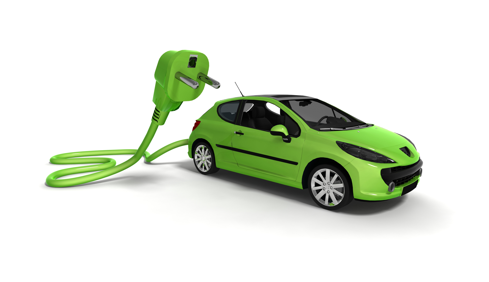
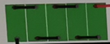
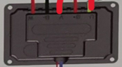

Sistema de Aprendizaje y Práctica del Sistema de Accionamiento Eléctrico
Entorno interactivo para el estudio y práctica del conexionado de componentes de alta tensión,
sistemas auxiliares, arneses de control y principios de funcionamiento en vehículos eléctricos puros e híbridos.

100% Eléctrico (BEV)
Vehículo Eléctrico Puro
Simulador de conexiones prácticas de componentes de tracción de alta tensión (batería, inversor, motor trifásico, contactores, convertidor DC-DC) y diagrama de principios de funcionamiento.
Explorar Módulos BEV ➔
Híbridos (HEV)
Vehículo Eléctrico Híbrido
Estudio interactivo de arquitecturas de propulsión híbrida: configuración en Serie, configuración en Paralelo y configuración Combinada (Serie-Paralelo con divisor planetario).
Explorar Módulos HEV ➔
🧪
Diseño & Pruebas
Battery Design Lab
Diseña packs de baterías electroquímicos (LFP, NCM, LTO, Pb, NiMH), dimensiona Ns/Np, evalúa térmicamente, inyecta fallas y analiza la respuesta del BMS con simulación de fuga térmica.
Entrar al Laboratorio ➔
📘
Documentación & Mantenimiento
Anotaciones de Aprendizaje
Guía técnica completa del simulador: arquitecturas BEV, separación HV/LV, inversor, baterías, contactores y sistemas híbridos serie, paralelo y combinado.
Consultar Anotaciones ➔
Módulos BEV
Sistema de Tracción de Vehículo Eléctrico Puro
Selecciona una modalidad de aprendizaje: simulación de cableado práctico entre componentes reales o el análisis del principio de funcionamiento lógico y flujo de energía.

Simulación Práctica
Simulador de Cableado Físico
Conecta los terminales del convertidor DC-DC, relé, contactor DC, fusibles de alta tensión, controlador de motor, batería de tracción y motor eléctrico trifásico.
Iniciar Práctica de Cableado ➔

Principio de Operación
Diagrama de Flujo y Principios
Establece las relaciones de control (VCU, BMS), flujo de potencia eléctrica bidireccional y enlaces mecánicos hacia la transmisión y las ruedas motrices.
Iniciar Diagrama Lógico ➔
🔋
Dinámica Vehicular & SOC
Laboratorio Virtual de Autonomía y Consumo (BEV)
Simula la autonomía real y el consumo energético variando masa, aerodinámica, pendientes de ruta y ciclos de conducción (NEDC, WLTC, CLTC).
Abrir Laboratorio de Autonomía ➔
🧪
Diseño & Pruebas
Battery Design Lab
Laboratorio de electroquímica y baterías: dimensiona packs Ns/Np, curvas térmicas, fallas internas y alarmas del BMS.
Abrir Lab de Baterías ➔
Módulos HEV
Sistema de Tracción de Vehículos Eléctricos Híbridos
Analiza y realiza las conexiones de potencia, mecánicas y de combustible en las tres principales arquitecturas de propulsión híbrida automotriz.
Arquitectura 1
Híbrido en Serie
El motor térmico acciona un generador para cargar la batería o suministrar electricidad al motor de tracción eléctrico.
Abrir Híbrido en Serie ➔
Arquitectura 2
Híbrido en Paralelo
Tanto el motor de combustión como el motor eléctrico están acoplados mecánicamente a las ruedas mediante la transmisión.
Abrir Híbrido en Paralelo ➔
Arquitectura 3
Híbrido Combinado
Sistema serie-paralelo con engranaje planetario divisor de potencia (PSD). Permite tracción mecánica y generación simultánea.
Abrir Híbrido Combinado ➔
Simulador de Cableado
Conexión de componentes de tracción
📢
Sistema listo. Selecciona dos terminales para conectar.
Referencia Técnica Canónica
Anotaciones de Aprendizaje y Mantenimiento
Arquitectura eléctrica y lógica de funcionamiento BEV & HEV del simulador autónomo.
Laboratorio Virtual de Autonomía y Consumo (BEV)
Cálculo físico de dinámica vehicular, consumo energético y autonomía por ciclos y pendientes.
100%60.0 kWh
Ciclo:WLTC
Pendiente:0.0%
Tiempo:0m 0s
Progreso de Ruta:0.00 / 35.0 kmTramo:#1 / 4
🚗 Perfil de Vehículo y Parámetros Físicos
Masa (kg)1000–5000
Batería (kWh)20–150
Cd (Aero)0.18–0.60
Área Frontal Af (m²)1.5–5.0
Rodadura (Crr)0.005–0.030
📈 Ciclo de Conducción
🛣 Editor de Ruta (Pendientes)
Diseño & Pruebas
🧪 Laboratorio de Diseño y Pruebas de Baterías
Dimensionamiento Ns/Np, modelo electrotérmico dinámico, cargas auxiliares, inyección de fallas y telemetría BMS en tiempo real.
⚙️ Parámetros de DiseñoInputs Sincronizados
Energía Objetivo (kWh)40
Voltaje de Bus Nominal (V)400
Potencia Continua Requerida (kW)50
Potencia Pico Requerida (kW)100
SOC Inicial (%)90
T. Ambiente (°C)25
Potencia Continua
Potencia Pico
Energía Mínima
Configuración125S 1P
Total Celdas125
Tensión Nominal400.0 V
Capacidad Pack100.0 Ah
Energía Real40.0 kWh
Masa Pack (×1.20)300.0 kg
Densidad Grav.133 Wh/kg
Densidad Vol.197 Wh/L
Costo Estimado$3,240
Resistencia Rint68.75 mΩ
🔋 Arquitectura Física del Pack (SVG Interactivo)Haz clic sobre una celda para ver sus detalles
⚡ Desglose de Cargas de Alta Tensión y 12 V (V3)Ciclo de Servicio 0–100%
Velocidad de Crucero (km/h)90
Consumo Base Vehicular (Wh/km)150
Potencia Auxiliar Total1800 W
Consumo Añadido+20.0 Wh/km
Consumo Total170.0 Wh/km
Autonomía Resultante353 km-12.0%
Perfil:
C-Rate:1.0C
Tiempo0 s
Tensión Pack400.0 V
Corriente0.0 A
Potencia0.0 kW
Temperatura25.0 °C
Estado de Carga90.0 %
Estado BMSNORMAL
📉 Tensión Terminal V(t) [V]
⚡ Corriente I(t) [A]
🌡️ Temperatura T(t) [°C]
🔋 Estado de Carga SOC(t) [%]
⚠️ Modo Didáctico de Fuga Térmica (Thermal Runaway)
Al activar este modo pedagógico se anula la desconexión protectora del BMS para ilustrar el sobrecalentamiento exotérmico (>1 K/s) y la propagación térmica incontrolada.
La celda ha entrado en descomposición exotérmica. En condiciones reales, los contactores se abrirían de inmediato y se activaría la refrigeración de emergencia.
🛠️ Inyección de Fallas en 4 Niveles (§8)Celdas · Módulos · Pack · Sistema
🖥️ Registro de Eventos y Decisiones del BMS (§9.2)
Prioridad Costo y Máximo Ciclo de Vida:LFP (LiFePO₄) (2000–6000 ciclos, 81 $/kWh, alta estabilidad térmica).
Prioridad Carga Ultrarrápida / Temperatura Extrema (-30 °C):LTO (Titanato de Litio) (hasta 10C carga, >15,000 ciclos).
Prioridad Costo Mínimo de Arranque (12 V):Plomo-ácido AGM (alta corriente instantánea de arranque en frío, bajo costo).
Resultados de Simulación
Resumen de Autonomía y Consumo
Autonomía Real Alcanzada
0.00 km
Consumo Medio
0.00 kWh/100km
Autonomía Total Estimada
0.0 km
¿Llegó a destino?
--
Ficha Técnica
Nombre del Componente
Descripción del componente.
Manual de Operación
📖 Guía de Uso del Simulador de Baterías
🎛️ Sliders Sincronizados con Entradas NuméricasPrecisión
Cada parámetro clave (Energía kWh, Voltaje V, Potencias kW, SOC %, C-rate) cuenta con un slider continuo y una caja numérica. Puedes arrastrar la barra para exploración rápida o escribir el valor exacto con el teclado.
📋 Selectores Inteligentes de Química y CeldasFiltrado Dinámico
Al seleccionar una química electroquímica (ej. LFP o NCM), el menú de Formato de Celda se actualiza automáticamente mostrando únicamente las celdas comerciales compatibles (§4) con sus capacidades reales en Ah y resistencia interna.
🟢 Semáforo de Viabilidad en Tiempo RealValidación Automática
Un indicador visual con 3 puntos (● Verde = Cumple, ● Rojo = No Cumple) evalúa si tu pack soporta la Potencia Continua, Potencia Pico y la Energía Requerida basándose en las densidades de potencia ($W/kg$) y $C\text{-rate}$ límite del fabricante.
🔋 SVG Interactivo del Pack de BateríasInspección al Clic
El panel visual dibuja la estructura física en serie y paralelo. Haz clic sobre cualquier celda para abrir su ficha técnica con voltaje instantáneo, temperatura local y resistencia interna. Las celdas cambian de color (cian, amarillo o rojo pulsante) ante sobrecalentamiento o fallas.
⚡ Interruptores de Cargas Auxiliares & VelocidadDuty Cycle 0-100%
Activa o apaga accesorios (climatización, calefactor PTC, desempañador, audio, ADAS) con el interruptor y ajusta su ciclo de servicio. Observa al instante el impacto en la autonomía disponible en km.
📈 Controles de Simulación & GráficasTelemetría Viva
Botones ▶ Iniciar, ⏸ Pausar, ⏭ Paso (1s) y multiplicadores de velocidad (1x, 5x, 20x) para registrar curvas dinámicas de Tensión, Corriente, Temperatura y SOC.
⚠️ Interruptor de Fuga Térmica & Consola BMSSeguridad Didáctica
Permite inyectar 17 fallas en 4 niveles y activar el Bypass de Fuga Térmica para simular la propagación exotérmica descontrolada cuando se anula la intervención protectora del BMS.
Aquí configuras el pack. Calcula automáticamente el número de celdas en serie ($Ns = \lceil V_{bus}/V_{celda} \rceil$), celdas en paralelo ($Np$), masa de celdas, masa total del pack (con factor 1.20 de empaquetado), volumen, densidad gravimétrica ($Wh/kg$), volumétrica ($Wh/L$) y costo económico estimado ($/kWh).
⚡ Pestaña 2: Cargas & AutonomíaFórmula §6
Analiza el impacto del mundo real en el vehículo. Ingresa la velocidad de crucero (ej. 90 km/h) y el consumo base (ej. 150 Wh/km). Descubre cómo el aire acondicionado (3 kW) reduce la autonomía un 12% y el calefactor PTC combinado (4 kW) la reduce hasta un 24%.
Somete el pack a perfiles de descarga a corriente constante (CC), potencia constante (CP), carga rápida CC-CV, pulsos de tracción/frenado regenerativo o un ciclo dinámico urbano. Cuatro gráficas muestran la caída por resistencia interna, calentamiento Joule ($I^2 R$) y descarga coulómbica.
Experimenta inyectando fallas a nivel celda (resistencia alta, autodescarga, cortocircuito), módulo (conexión floja, sensor NTC ciego), pack (fuga de refrigerante, contactores) o sistema (pérdida de CAN, fallo DC/DC). Observa el log del BMS reaccionar con derating de potencia, modo limp o apertura de contactores.
📊 Pestaña 5: Comparador & ResultadosToma de Decisiones §10
Guarda tus diseños (hasta 4 a la vez) para compararlos frente a frente en una tabla. Consulta la guía de decisión inteligente para saber cuándo conviene elegir LFP (costo/vida), NCM (autonomía), LTO (potencia/frío extremo) o Plomo-ácido (arranque económico). Incluye exportación directa a CSV.
🎯 Misión Didáctica: Dimensionarás un pack de 40 kWh a 400 V para un BEV urbano, probarás el impacto térmico de descargarlo a alta potencia y observarás cómo responde el BMS ante una celda defectuosa.
Paso 1: Configurar el Pack en la Pestaña 1Caso V1
1. En Aplicación de Referencia, selecciona BEV urbano.
2. Verifica que la química sea LFP (LiFePO₄) y la celda sea Prismática LFP 100 Ah.
3. Comprueba el cálculo en el HUD: 125S 1P (125 celdas), 40.0 kWh, masa del pack de 300 kg y densidad de 133 Wh/kg.
4. En el visor SVG inferior, haz clic sobre la Celda 1 para ver su ficha técnica (3.2 V, 0.55 mΩ).
Paso 2: Comprobar el Efecto de la Climatización en la Pestaña 2Caso V3
1. Cambia a la pestaña 2. Cargas & Autonomía.
2. Con velocidad a 90 km/h y sin cargas, la autonomía inicial es de 400 km.
3. Enciende el A/C al 60% de ciclo: el consumo sube a 170 Wh/km y la autonomía baja a 353 km (-12%).
4. Enciende además el Calefactor PTC al 60%: el consumo sube a 197 Wh/km y la autonomía desciende a 305 km (-24%).
Paso 3: Corrida Dinámica a 2C en la Pestaña 3Caso V2
1. Pasa a la pestaña 3. Pruebas Carga/Descarga.
2. Ajusta el deslizador de C-Rate a 2.0C (corriente de 200 A).
3. Haz clic en ▶ Iniciar y pulsa 5x para acelerar el tiempo.
4. Observa cómo la gráfica de tensión cae por resistencia interna y la temperatura sube progresivamente debido a la disipación Joule ($I^2 R$).
Paso 4: Inyectar Falla y Desatar Fuga Térmica en la Pestaña 4Casos V6 & §8
1. Ve a la pestaña 4. Inyección Fallas & BMS.
2. Marca la casilla Resistencia alta (R×10). En el registro del BMS aparecerá una alerta por gradiente térmico $\Delta T$.
3. Vuelve a la Pestaña 1: verás que la Celda 1 ahora parpadea en color naranja/rojo como punto caliente.
4. En la Pestaña 4, activa el interruptor superior: Modo Didáctico de Fuga Térmica.
5. Marca Disparo térmico: la celda entrará en descomposición exotérmica ($dT/dt > 1\text{ K/s}$), aparecerá la pantalla de advertencia animada y podrás ver el peligro de una fuga térmica sin corte del BMS.
¿Listo para empezar la práctica? Haz clic en el botón para cargar este ejemplo automáticamente:
 Híbridos (HEV)
Híbridos (HEV)